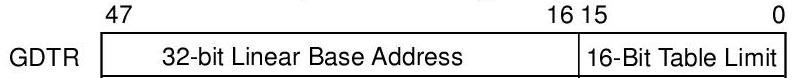
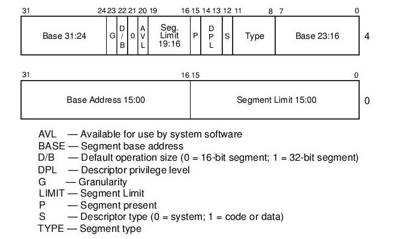
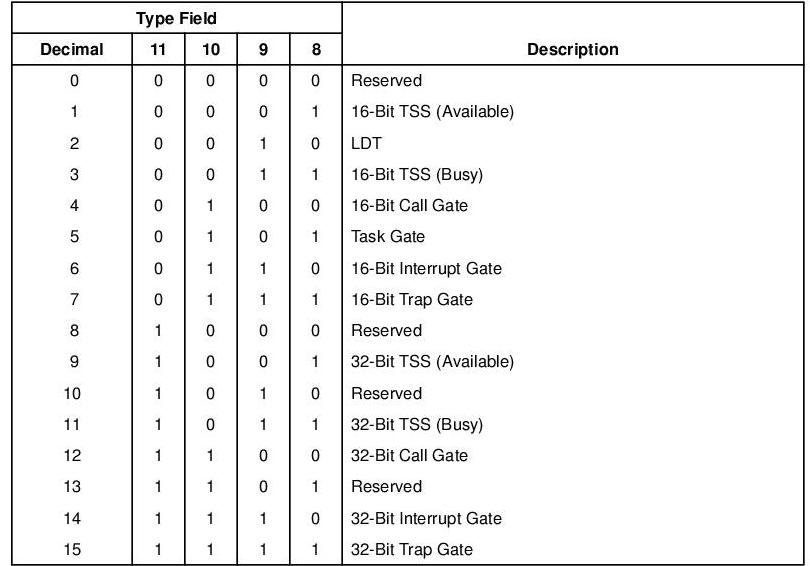
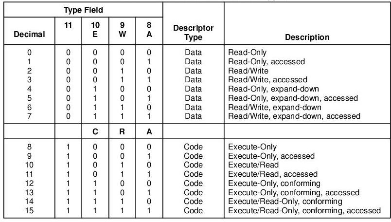

Una struttura fondamentale di IA32 è la gdt (tabella dei descrittori globali). La gdt è sostanzialmente un vettore grande al massimo 8192 elementi. Ogni elemento è un descrittore di segmento, grande 8 byte. Il primo elemento di questo vettore, cioè quello con indice 0 deve valere 0.
Per indicare la gdt al processore dobbiamo salvare la grandezza della gdt e l'indirizzo di partenza del registro gdtr. Il gdtr è fatto così:

Una semplice funzione per impostare il gdtr è questa:
void set_gdtr(qword * base,size_t num_desc) {
dword gdt_reg[2];
gdt_reg[0]=(num_desc*8) << 16;
gdt_reg[1]=(dword)base;
__asm__ __volatile__ ("lgdt (%0)": :"g" ((char *)gdt_reg+2));
}
Vediamo un po' i tipi di segmenti che esistono.
La forma generale di un descrittore di segmento è questa:

Dunque un descrittore di segmento indica il range di memoria a cui si riferisce e poi specifica gli attributi per questa zona di memoria. Poi vedremo come indicare al processore quale segmento usare. Ecco una descrizione dei campi:
- Base: E' l'indirizzo fisico (o lineare se è attivata la paginazione) nell'inizio del segmento di memoria
- Limite: Indica l'offset di quanto è grande un segmento:
- Se il flag G è spento allora ogni unita è di 1 byte, ad esempio un limite di 100 significa che il nostro segmento va da base a base+100 byte. Quindi possiamo descrivere segmenti che vanno da 1 byte a 1 MegaByte
- Se il flag G è acceso allora ogni unità è di 4KBytes (4096 byte), quindi ad esempio un limite di 100 significa che il nostro segmento va da base a base+(4096*100) byte. Quindi possiamo descrivere segmenti che vanno da 0 a 4 GigaByte.
- Tipo: Indica il tipo si segmento che si vuole costruire. Ecco delle tabelle dei tipi:
- Se S non è settato allora parliamo di un descrittore non di memoria:

- Se S è settato allora parliamo di un descrittore di memoria di codice o dati:

- DPL: livello di privilegio del descrittore. Dunque IA32, quando si è in pmode, prevede 4 livelli di protezione chiamati ring (anelli). Il più privilegiato è il ring 0 (livello del kernel), mentre il meno privilegiato è il ring 3 (livello utente). Noi useremo solo il 3 e lo 0.
- P: presente. Indica se un segmento è presente oppure no. Se si tenta si impostare un segmento non presente viene generata una bella #NP (segment not present).
- D/B: è consigliabile per i segmenti a 32 bit che sia ad 1, e per i segmenti a 16 bit che sia 0. Ha un sacco di funzioni in base al tipo di segmento. Per ulteriori informazioni vedere il manuale della intel a pagina 3-12.
Un ultima cosa da precisare è come indicare al processore i descrittori da usare. Dobbiamo rammentare che il processore ha degli specifici registri segmento. Per la precisione: CS, DS, SS, ES, FS, GS. I più importanti da impostare sono i primi 3. Il primo descrive il segmento per il codice, il secondo il segmento per i dati e il terzo il segmento per lo stack. Basta inserire l'indice del segmento nella gdt del segmento che ci interessa in uno di questi registri per fare in modo che la cpu li usi. L'eccezione è rappresentata da cs. Per indicare al processore il nuovo valore di cs, basta fare un jump al segmento in questione.
Ora possiamo iniziare ad implementare quello che abbiamo visto.
Ci sono varie soluzioni per i nostri scopi: possiamo implementare tutto il meccanismo completo definendo decine di costanti per ogni tipo di descrittore, quindi creare varie funzioni per utilizzare tutta questa roba, oppure possiamo creare un becero vettore di qword, impostare come servono a noi i vari descrittori mettendone direttamente i valori e commentando adeguatamente il tutto. Per il teorema della facilità, visto che una volta impostati i descrittori non verranno più modificati, scegliamo quest'ultima soluzione.
Per semplicità creiamo una bella funzione del tipo:
void init_gdt();
e ne mettiamo il prototipo in gdt.h.
Visto che poi per implementare la protezione della memoria implementeremo la paginazione, creiamo ora 2 segmenti che prendono tutta la memoria, da 0 a 4 Gb, un segmento sarà per il codice, l'altro per i dati.
void init_gdt(){
gdt[0] = 0;
//Limite = 0xFFFFF (4 gb)
//Base= 0
//Ring= 0
//Granularità = si
//Tipo= 0xA (codice con permesso di esecuzione e lettura)
//Presente= si
gdt[1] = 0x00CF9A000000FFFFLL;
//Limite = 0xFFFFF (4 gb)
//Base= 0
//Ring= 0
//Granularità = si
//Tipo= 2 (Dati con permesso di lettura e scrittura)
//Presente= si
gdt[2] = 0x00CF92000000FFFFLL;
set_gdtr(gdt, 3);
//setto gli eflag o meglio li azzero tutti
debug << "sto per settare gli eflag e i registri segmento" << endl;
debug.register_trace(ON);
asm("pushl $2; popf");
//l'indice del segmento dei dati è 2, quindi la sua distanza dall'inizio è 0x10 (16 = 8 * 2)
//mentre l'indice del segmento dei dati è 1 quindi la sua distanza è 8
asm volatile (
"movw $0x10,%ax \n"
"movw %ax,%ds \n"
"movw %ax,%es \n"
"movw %ax,%fs \n"
"movw %ax,%gs \n"
"movw %ax,%ss \n"
"ljmp $0x08,$next \n"
"nop\n"
"nop\n"
"next:\n");
debug.register_trace(OFF);
return;
}
Molto bene! Per il momento abbiamo finito la gdt, ora passiamo alla idt ^___^